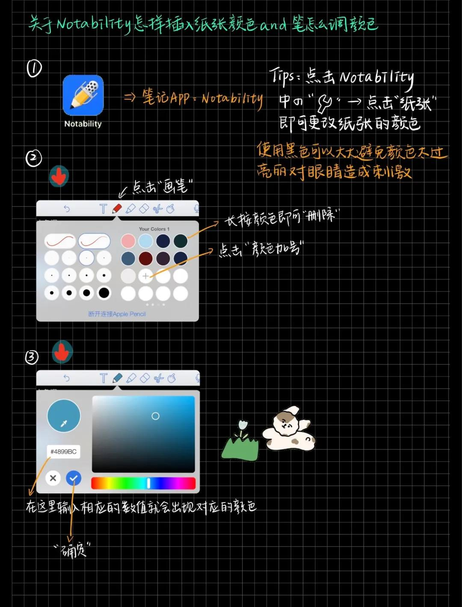
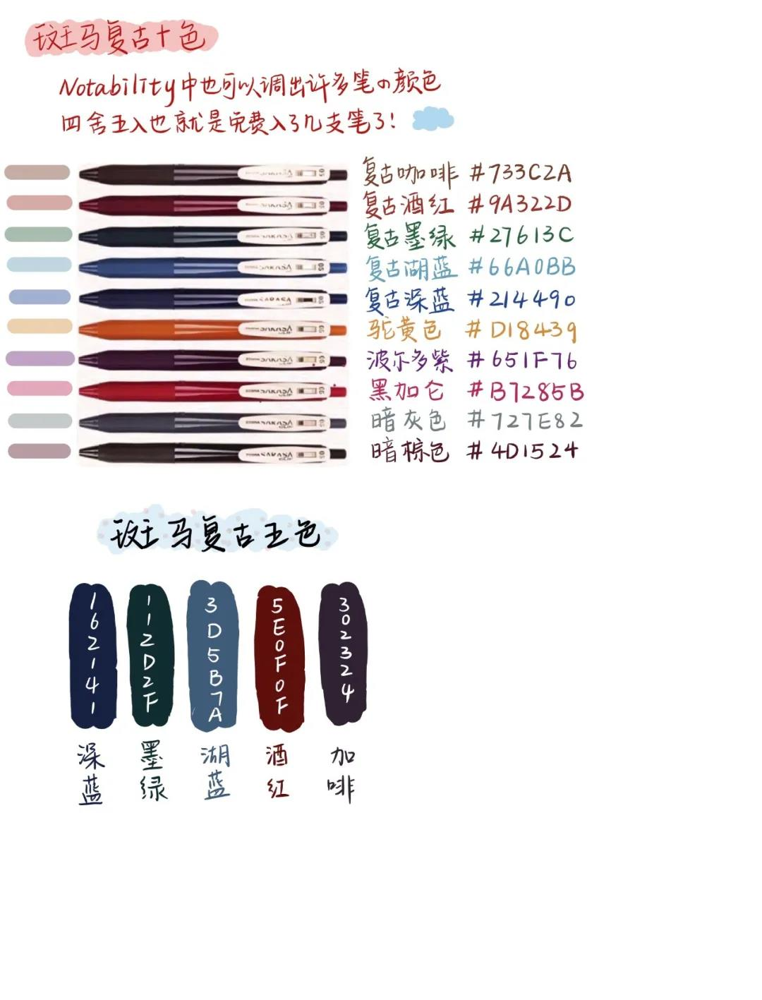
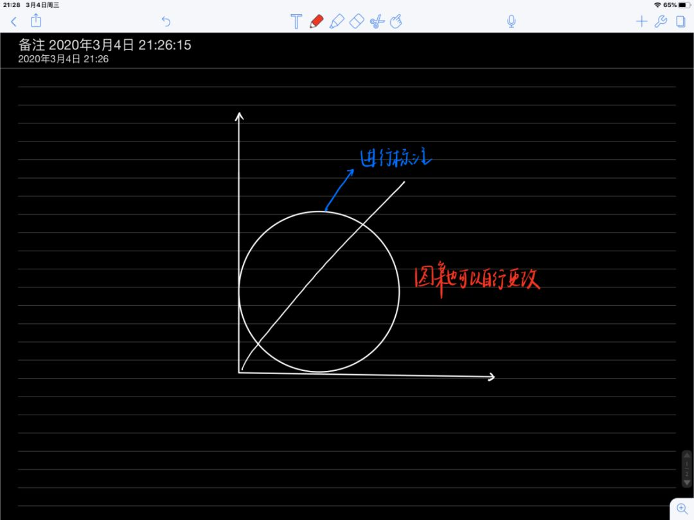

The Most Popular Note App in iPad
背景可以设置不同样式的，官方提供了不同格式的纸张和类型，你可以快速选择一种喜欢的颜色来用。 我常用的是横线，最简单最简洁，你也可以用方格和空白。
在你做笔记时，最好将不同笔记分为不同类型，比如：蓝色：简单标注，红色：不懂待查阅的疑问，绿色：感想总结。 一个页面总的颜色不要太多，多了就很花哨，只有一个的太少颜色也不好，不利于你的笔记查看。这个颜色原则也可以用在任何类型的笔记，都是适用的。 如果你不喜欢官方的颜色，可以自己设置，点击上方的铅笔✏，添加颜色，输入给的色值，再打勾，就创建了你想要的颜色，附上图文小教程👇。
这里也为你准备了斑马的复古色，文具控必备，你可以选择自行添加。
传统的手写笔记，当界面不够时，你肯定会有添加便签的步骤，NB 当然也有，右上角，添加便笺，这个便签还可以任意移动，换不同的颜色。
NB 很好的一点是，能让笔记更加干净简洁，有错误？点击橡皮擦，可以选择两种擦去方式，不完整的，就是只擦掉橡皮擦接触面，完整的，就是擦掉一笔下的笔迹。我更喜欢用完整的，更加方便。
用图比用文字更简洁，当你想画一个图案时，直接画完，笔再停顿1-2秒，它便可以自动转为相关图案。此功能要预先在设置里打开，「设置-手写-直线」。

用套索工具，可以将你的笔记进行移动，同时还可以进行简单的屏幕截图，在做错题本时真的是神器。同样，套索有两种选方式，方型的是固定形状，曲线的是自行勾画形状。
这里有一个 BUG，当你的笔记在图片上标注时，用套索工具移动时，只能移动标注，不能移动图片；而如果你移动图片时，图片外的标注又不能跟着移动。这点真的让人想骂娘。
如果不介意，可以用套索将整体套住，点击「拷贝」，然后「粘贴图像」，或者直接移动页面，但这样，你的笔记就不能更改了，它成为了一张图片……